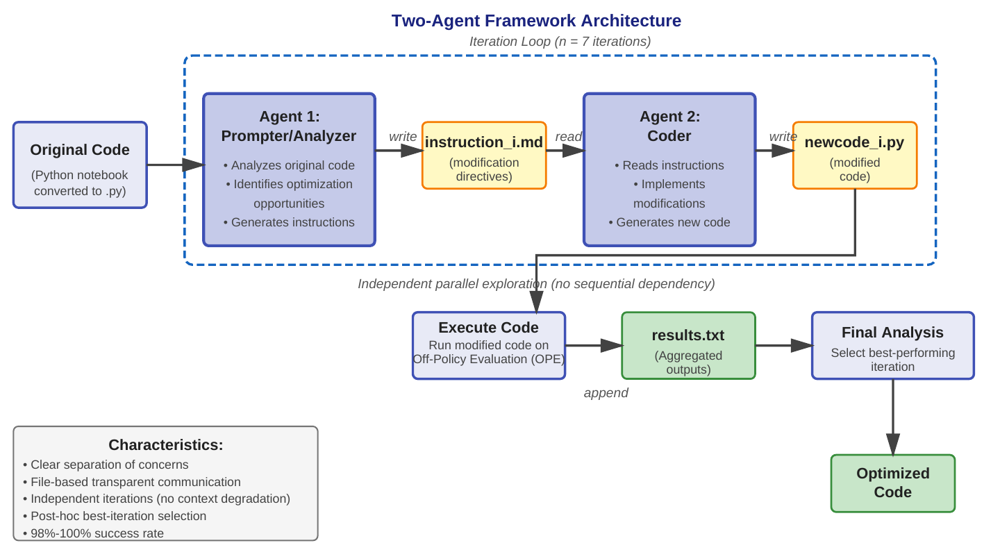

Published · 2026
Wu, J. J. W.*, Herlihy, A. P.*, Mirza, A. S., Afoud, A., & Fard, F. (2026). GrowthHacker: Automated Off-Policy Evaluation Optimization Using Code-Modifying LLM Agents.
ACM Transactions on Software Engineering and Methodology (TOSEM).
*Equal contribution.
Code-modifying LLM agents search for better off-policy evaluation estimators through repeated experiments.